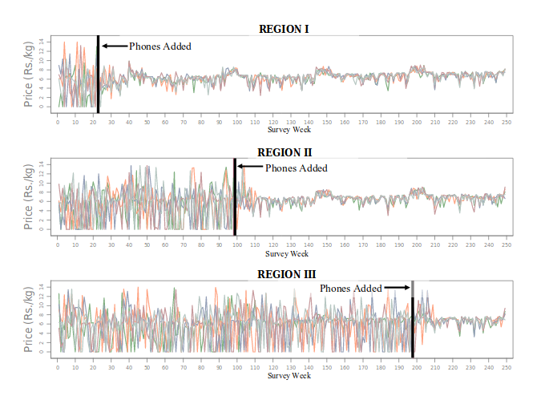
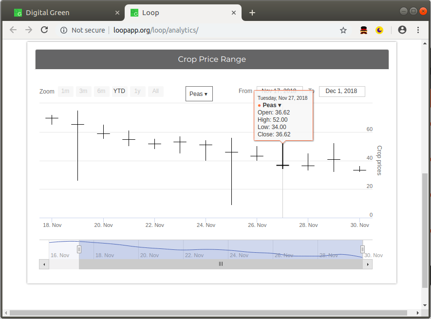
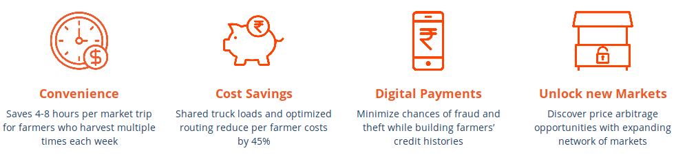
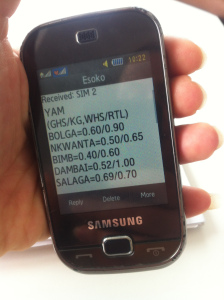
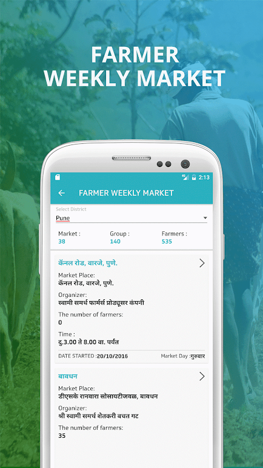

Fresh Insights
User Research Towards a Market Information
Service for Bihari Vegetable Farmers
University of Washington
+
Digital Green
Outline
- Market Information Services
- Context: Loop
-
Case Study: Buxar, Bihar
What is the role of price information?
What can this teach us about market information services?
Theory
Information Asymmetry
Trader knows the price is ₹100
Farmer thinks the price is ₹70
Theory
Information Scarcity
Jensen 2007: sardine prices stabilized upon the arrival of mobile phones
Mixed Evaluations
Of Market Information Services
| Farmers perceived higher prices | Islam & Grönlund 2009, Lokanathan et al 2011 |
| Evidence of increased bargaining power | Courtois & Subervie 2014, NYU CTED 2013, Nakasone 2013 |
| Price increases for some crops but not others | Nakasone 2013, NYU CTED 2013, Courtois & Subervie 2014 |
| No observed effect on prices | Camacho & Conover 2010, Fafchamps & Minten 2012 |
| No observed change in marketing behaviors | Baumüller 2015, Islam & Grönlund 2010, Lokanathan et al 2011 |
"...our informants consistently disclaimed any practice of acquiring market price information for the purpose of comparison between markets (by phone or other means)..."
— Burrell and Oreglia 2015
Market information is highly situational
What is the role of market information in Buxar, Bihar?
Field Observations • Interviews • Prototypes
Shared transport-to-market
service for farmers
Time Savings • Pooling Transport Costs • Accessing New Markets

Vegetable Markets in Buxar
What characteristics affect market information uses?Heterogeneous structures
- Bihar abolished APMC state markets
- Varying sizes and structures
- Farmers sell in many markets
- No refrigeration
- Volatile Prices
Marketplace Actors
- Farmers
- Local Traders
- Long-Distance Traders
- Farm-gate Traders
- Commission Agents / Gaddidars
Interviews
- Semi-structured interviews
marketing decisions • price information - 17 Loop farmers in 6 villages
- 3 commission agents
Frequent calling for prices
Q: If you sell the same agent every time, then why do you bother to check prices?A: Well when the prices are good then I'm happy, and when the prices are bad then I'm sad!
Price information usage
- Market choice
- Arbitrage
- Negotiation
"We negotiate with farm-gate traders based on the previous day’s market rates. We offer 2 rupees above yesterday’s rate, and then the traders negotiate it down to 1 rupee above yesterday’s rate"(see paper for greater depth)
Recent market changes
reported after mobile phone arrival
- More traders (markets + farm-gate)
-
Market activity shifts
”the traders from [far-off] Ara market are coming here now, so there is no point in going to Ara market anymore.”
- Fewer price crashes
- Concurrent road improvements
We cannot establish causation • some attributed changes to phones
Usefulness of price information is situational
“I never take any decision on prices. When my volume is low I go to Dumri market, when it’s high I go to Nayabhojpur market."(details in paper)
Non-price factors
- Supply gluts, wastage
All goes wrong if you keep switching agents.
- Disparity in marketing skills; Unfamiliarity
- Danger
- Convenience:
I couldn't manage with everything; I'm growing old.
Addressing Market Barriers
Some are well-suited for a market information service, others are not.
Other Approaches
| Barriers | Strategies | |
|
→ |
|
|
→ |
|
|
→ |
|
|
→ |
|
Takeaways
-
Heavy use of phones in vegetable marketing
Price checking, negotiation, market choice; location-specific + situational -
Phones have substantially changed markets
Corroborates information scarcity + information asymmetry -
Many heterogenous complicating factors
Some may by addressed by ICT's, some by other media
Thanks!
Extra Slides
Interviews
- 11 farmers in 6 villages
- 6 Loop aggregators (also farmers)
- 3 Commission agents
- All men, ages 20 to 61
- 18 of 20 had mobile phones
- All farmers grew vegetables
- Majority owned farmland
- Interviews in Hindi
- 2-person interview team
- Tried for private interview locations
- All recorded except commission agents
- Questions informed by prior fieldwork
Benefits for farmers
Market Information Services
 Findings corroborate Information Asymmetry and Information Scarcity
But the value of price information is
highly situational
Price Checking
- Frequently calling market agents
- Sharing with other farmers
- Dealing with traders directly
- Not everyone checked prices
Information sources
-
Calling commission agents
"Twenty to twenty five farmers call me every day... we never discuss quantities, only prices."
-
Making deals with traders over the phone
- Market traders + farm-gate traders
- Other farmers
Consistence with information asymmetry theory:
“Before having mobile phones, traders had better margins because not many people had price information. Now everybody knows the prices.”
Consistence with information scarcity theory:
“Now after mobile phones, prices have become more stable and balanced between markets.”
Choosing Markets
In some cases:
"When the market starts, [I find] out the rates everyday. I go wherever the rate is good."
Arbitrage
Traders buy where prices are low, and sell where prices are highProduction volume and seasonality
“I never take any decision on prices. When my volume is low I go to Dumri market, when it’s high I go to Nayabhojpur market."Volume varies by season
Supply Gluts & Price Crashes
"Let’s say I have 2 quintal of tomatoes, and if I get to know someone else has 5 quintal then I know that the rate for tomatoes is going to drop."
- Wastage
- Seasonal variation
Relationships & Familiarity
“All goes wrong if you keep switching commission agents.”
- Commission agents expect loyalty
- Credit from agents
- Markets have different operations
- Disparity in marketing skills
Convenience
“I couldn't manage with everything; I'm growing old.”
- Selling vegetables is hugely time-consuming
- Major reason for using Loop service
- (more factors in the paper)